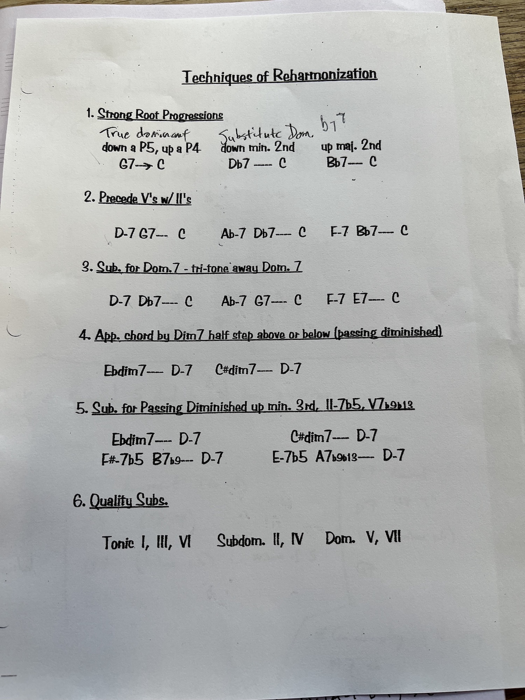

Dominant cadence: V-I
Two-five-one: ii-V-I
In any progression that resolves with a dominant cadence (e.g. ii-V-I), we can replace the V chord with an alternate substitution. A set of common substitutions can be thought of as being taken from the tones of diminished 7 V chord. For example, in Cmaj, consider the tones of the diminished chord for the V, Gdim7 (G B\(\flat\) D\(\flat\) E), and use their dominant 7 chords as substitutions for the V chord. This gives us the following substitutions:
G7 (Dominant)
B\(\flat\)7 (\(\flat\text{VII}^7\), “flat 7 7")
D\(\flat\)7 (Tritone substitution)
E7 (less common)
Can also get to the the above dominant substitutions via their respective ii chords e.g. \[A \flat m7 - D \flat 7\] Note that such a 2-5-1 progression on the \(\flat\text{VII}^7\) is also referred to as the “backdoor” 2-5 progression. For example, in C major this progression is Fm7 - B\(\flat\)7 - C.
Note that the tritone substitution has the same key chord tones as the normal dominant, the 3rd and 7th i.e. a \(D\flat 7\) contains both F and B, the 3rd and 7th of G7. So, the tritone is in some sense effective as a dominant resolution for similar reasons to the standard dominant chord. But, it can also be thought of as containing tones of an altered dominant chord. This is the same for the \(\flat\text{VII}^7\) substitution. Specifically:
Dominant: 1 3 5 7
\(\flat\text{VII}^7\): \(\sharp\)9 5 7 \(\flat\)9
Tritone sub: \(\sharp\)11 7 \(\flat\)9 3
That is, tritone sub can be viewed as nearly functionally identical to a \(G7 \flat 9 \sharp 11\) in terms of chord tones, also with just chromatic bass movement (\(D \flat\) to \(C\) instead of \(G\) to \(C\).)
See also worksheet below on reharmonization:

Autumn Leaves (B\(\flat\), G)
There Will Never Be Another You (E\(\flat\), B\(\flat\)) (Form: ABAC)
Misty (E\(\flat\))
All the Things You Are
There Is No Greater Love (B\(\flat\)) (Form: AABA)
These Foolish Things (E\(\flat\))
Blue Bossa
Blue Monk
Night In Tunisia
All of Me
Solar
Have You Met Miss Jones
Someday My Prince Will Come